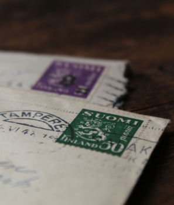
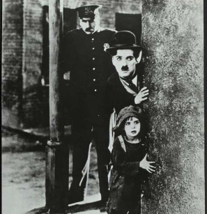
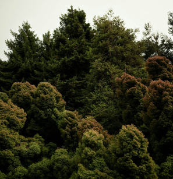

시리즈
-
[연애편지] 미리보기
#5. 보부아르가 보낸 마지막 편지
매우 소중한 당신. 어떤 편지도 부치지 않고, 어떤 편지도 오지 않는 영원 같은 시간이 흘렀어요. 당신에 관한 몇 가지 소식이 새어 들어왔어요. 당신이 『더 네이션』에 쓴 〈폴라무르 박사〉의 시나리오 작가(그의 이름을 잊어버렸어요)에 대한 훌륭한 글과, 또 어떤 잡지에서였는지 기억나지 않지만 여인들과 사랑, 결혼 등에 관해 나눈 흥미진진한 인터뷰들이요. 알랭인가, 세르주인가가 당신이 매우 고상한 의상을 걸치고 다닌다고 일러 주던데, 정말 당신이 맞아요?
-
[연애편지] 미리보기
#3. 모든 것을 다 줄 준비가 되어 있지 않으면서 자신의 일부를 준다는 게 옳은 일인가?
1948년 10월 18일 월요일. 사흘 전에는 스카치를 마시러 니스로 내려갔다가 우연히 우체국 앞에서 늙은 앙드레 지드와 마주쳤어요. 그를 알아요? 작년에 노벨 문학상을 받은 프랑스 작가예요. 미국에서 그의 『일기』가 번역됐는데, 그 책은 미국인에게는 길고 지루할 거예요. 다수의 이해하기 어려운 프랑스인과 그들에 얽힌 일화 그리고 전적으로 프랑스적인 세부 사항들이 인용되어 그가 무엇을 이야기하는지 모를 것이기 때문이지요.
-
[연애편지] 미리보기
#1. 보부아르가 넬슨 올그런에게 보낸 첫 번째 편지
1947년 2월 23일 토요일 저녁, 캘리포니아행 기차에서. 친애하는 넬슨 올그런 씨. 영어로 편지를 써 보도록 하겠어요. 그러니 저의 서툰 문법 실력을 용서해 주시고, 단어를 올바르게 사용하지 않더라도 이해해 주세요. 게다가 저의 글씨체는 워낙 알아보기가 힘들고, 더욱이 저는 달리는 기차 안에서 쓰고 있답니다. 당신과 헤어지고 나서 곧 호텔에서 기사 하나를 마쳤어요. 별로 잘 쓰지 못했답니다. 걱정되는군요. 할 수 없지요.
-
[컬트] 미리보기
#5. 마셜 애플화이트와 천국문
1997년 3월, 캘리포니아주 랜초샌타페이에서 마셜 애플화이트는 무려 사흘에 걸쳐서 38명의 추종자로 이루어진 무리를 죽음으로 이끌었다. 그 마지막 날, 천국문의 주모자인 이 눈이 커다란 남자는 자신의 추종자들과 함께 수면제, 사과 소스, 보드카의 혼합제를 복용했는데, 그렇게 함으로써 본인도 “자신의 탈것에서 하차할” 수 있기 위해서였다. 또는 그들 외에 다른 사람들의 시각에 따르면, 스스로의 목숨을 끊기 위해서였다. 이것은 미국 역사상 가장 대규모의 집단 자살이었다.
-
[컬트] 미리보기
#4. 크레도니아 음웨린데와 하느님의 십계명 회복 운동
크레도니아 음웨린데는 생애 대부분에 걸쳐 남들의 주목을 피해 왔는데, 아마도 의도적이었을 가능성이 크다. 우간다 남서부의 외딴 시골에서 태어난 그녀는 심지어 역사상 가장 가혹하고 가장 성공한 종말론 컬트 가운데 하나인 ‘하느님의 십계명 회복 운동’을 건설하는 과정에서도 철저히 사람들의 이목을 피해 왔다. 음웨린데는 이목보다 돈을 선호했으며, 이를 추구하는 과정에서 잔혹하기 그지없었다. 추종자들은 각자의 세속 재산 모두를 십계명 회복 운동에 넘겨주고, 거룩한 예속 상태에서 살아갔다.
-
[컬트] 미리보기
#3. 데이비드 코레시와 다윗가지파
자기가 영광의 광휘 속에서 죽을 것이라고 예언했던 데이비드 코레시는 자신의 컬트 다윗가지파를 미국 연방 정부와의 처절한 대결로 몰아갔다. 언론 매체에 매일같이 보도되었던 이 사건에서 그의 추종자들로 이루어진 작은 무리는 텍사스주 웨이코의 자기네 거주 시설을 포위한 FBI와 무려 51일간이나 대치했다. 특히 1993년 4월 19일에 있었던 최종 충돌의 강렬함(다윗가지파 구성원 76명이 사망했는데, 그중 21명은 16세 이하였다) 때문에 ‘웨이코’는 극우 생존주의자 서클에서 유행어가 되었으며,